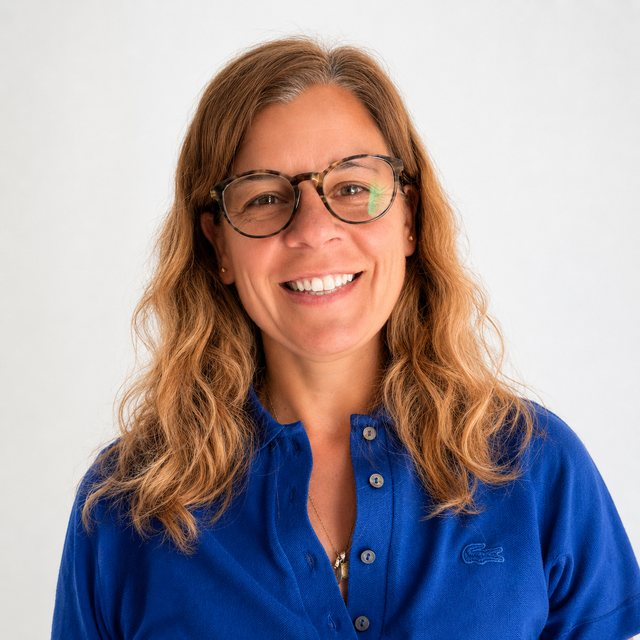

01
Diagnóstico
Mapeamos el proceso real, el que pasa todos los días, no el del manual. Salimos con el cuello de botella identificado y cuantificado.
2 a 3 semanas
Ingeniería de negocios e IA · Córdoba, Argentina
Diseñamos procesos. La IA los sostiene.
La mayoría de las decisiones que hoy se toman por intuición ya están respondidas en los datos de la operación. Nuestro trabajo es ordenar el proceso que los genera y dejar el sistema andando, documentado y en manos del equipo.
Cómo trabajamos
No arrancamos por la herramienta. Un proceso que no está claro no se arregla automatizándolo: se acelera el error.
Mapeamos el proceso real, el que pasa todos los días, no el del manual. Salimos con el cuello de botella identificado y cuantificado.
Definimos alcance, responsables e indicadores antes de escribir una línea de código. Acá se decide qué se automatiza y qué no.
Integramos con los sistemas que ya tienen. Cada decisión automática queda registrada y es auditable: se puede explicar por qué el sistema hizo lo que hizo.
Documentación, capacitación y acceso completo. El proceso queda operando con el equipo interno, sin dependencia del proveedor.
Para quién
Cambia el tamaño del problema y el marco normativo. No cambia el método.
Cuando el crecimiento se choca contra planillas, WhatsApp y una persona que se sabe todo de memoria.
Obra vial, energía, Oil&Gas. Cuando los datos existen, se registran hace años y no se usan para decidir nada.
Cuando la solución tiene que ser auditable, documentada y sobrevivir a un cambio de gestión.
Trabajo hecho
Lo que importa de un antecedente no es la tecnología que usamos, sino qué cambió en la operación después.
Automatización de la operación de señalización de una distribuidora de gas: relevamiento en campo, asignación de cuadrillas y control de cumplimiento, coordinado en cuatro provincias desde un solo sistema. El primer proyecto que hicimos juntas, antes de que PitIA existiera como empresa.
Modelo de visión por computadora combinado con recuperación de información sobre documentación técnica, para que un equipo pueda consultar en lenguaje natural un archivo que antes se revisaba a mano.
Panel de control y monitoreo para un equipo de data warehouse, integrando métricas de infraestructura y calidad de datos en una sola vista operativa.
Los límites
Decirlo de entrada ahorra reuniones y evita proyectos que iban a terminar mal.
Si el proceso no está claro, automatizarlo acelera el error. Primero se rediseña.
Una demo que impresiona y no se puede operar es tiempo perdido de las dos partes.
Documentación, accesos y capacitación son parte del entregable, no un extra.
No cobramos comisión por software ajeno. Si la mejor solución es una herramienta que ya existe, se los decimos.
Sin acceso a la operación no hay diagnóstico posible, solo suposiciones bien presentadas.
Cualquiera que garantice un ahorro sin haber visto sus datos está vendiendo, no estimando.
Quiénes somos
Una viene de dirigir obra e industria; la otra, de construir sistemas de inteligencia artificial. No somos una consultora que mira la operación desde afuera: una de las dos la administra todos los días.
Ádyton era la cámara interior del templo de Delfos: el lugar al que se iba con una pregunta. Nuestro símbolo es esa bóveda sostenida por tres apoyos, con la respuesta contenida adentro. No es decorativo — describe cómo trabajamos: una respuesta que no está sostenida por estructura no sirve para operar.
Empresaria del sector industrial. Fundadora y directora de VialParking S.A., desde donde dirige proyectos de infraestructura vial, señalamiento urbano e industrial y transporte de energía. Licenciada en Comercialización, con posgrado en Investigación de Mercados (UBA), formación en BIM y cursando la Maestría en Política, Derecho y Gestión Ambiental de la Universidad Austral. Conoce desde adentro la articulación público-privada: cómo se licita, cómo se ejecuta en territorio y qué necesita un proceso para sobrevivir a una auditoría, ambiental incluida.

Data Scientist e ingeniera de IA. Construyó agentes y sistemas de aprendizaje automático para telecomunicaciones y servicios públicos, y trabajó más de una década en logística y control de inventarios antes de dedicarse a los datos. Esa mezcla es la que hace que los sistemas que diseña se parezcan a la operación real.
Preguntas
Primer paso
Traé el que más te duele. Salimos de esa reunión con un diagnóstico preliminar y una estimación honesta de si vale la pena automatizarlo. A veces la respuesta es que no.